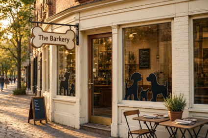
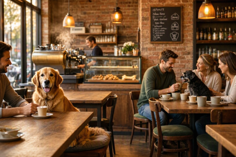
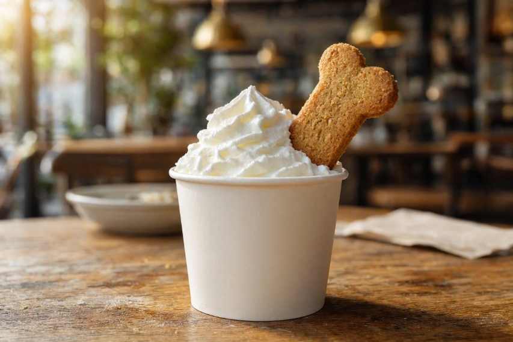
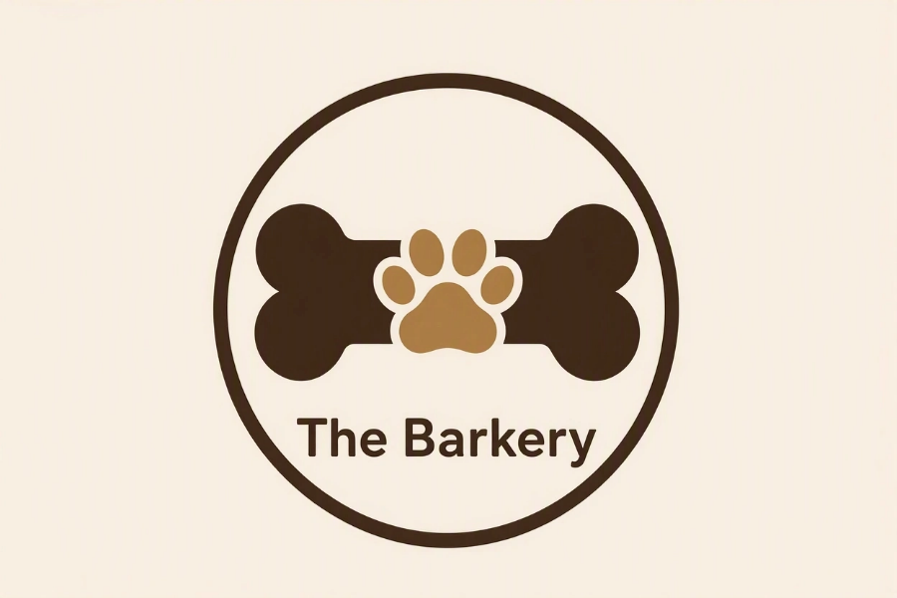
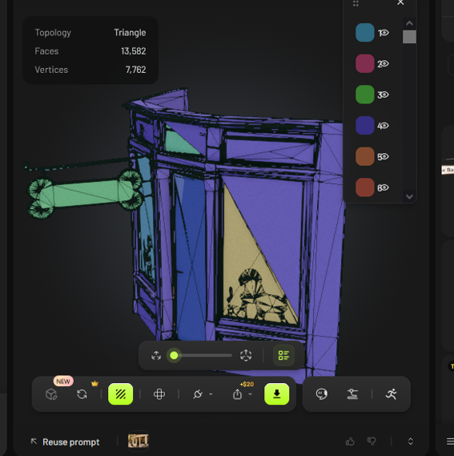
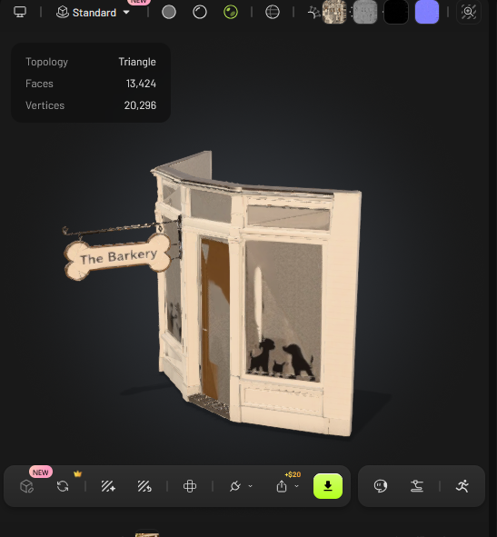

Sit. Stay. Sip.
Born from a simple idea: what if your morning coffee run was just as exciting for your best friend as it is for you? We built The Barkery from the ground up to be a sanctuary for dogs and their humans alike.
With our bone-shaped sign swinging in the afternoon breeze and custom dog silhouettes welcoming you from the window, you'll know exactly where you are the moment you turn the corner. It's not just a café; it's the neighborhood's new favorite meeting spot.

Come on in. You'll find warm brick walls, cozy lighting, and the happy hum of chatter, plus the odd tail wag. We kept the aisles wide and the tables low, so your pup can roam while you sip your latte.
It's where the community comes together. Whether you're here to work, catch up with friends, or treat your dog to a mid-day snack, The Barkery is your home away from home.

Our pups will greet you with all the love and energy they've got, and our human baristas are just as passionate. But we have to admit, our golden retriever mascot, Dogtor, steals the show every time. If you don't but a drink he might bark at you... but if you do he'll wag his tail every time he sees you! He sure is a good boy.
You'll often find him behind the counter, apron on, ready to take your order (or at least willing to accept a head scratch). He's the heart of The Barkery, and he ensures that every visit is filled with tail wags and smiles.
No visit to The Barkery is complete without our signature Puppuccino. It's a cup of fluffy, fresh whipped cream topped with a house-made, bone-shaped biscuit that your dog will absolutely devour.
It's the perfect treat for the perfect companion. Pair it with our fresh pastries and you've got the ultimate café experience. Our logo, a simple mix of a bone and a paw, stands for our promise: quality for you, and joy for them.


Before we ever poured a cup of coffee, we mapped out every detail of The Barkery. Our 3D rendering shows the exact structure and soul of the space we've created: a place designed for comfort, connection, and canine joy.


Close your eyes and imagine a sunny morning. The acoustic strumming, the light percussion: this is the sound of The Barkery. Pour a cup, grab a seat, and enjoy the ruff-ly perfect, pawsome vibes. Bark it up!
🎵 The Barkery Jingle
Listen to the Track →Voiceover by ElevenLabs included in the report because I never found a way how to add it here... bark!